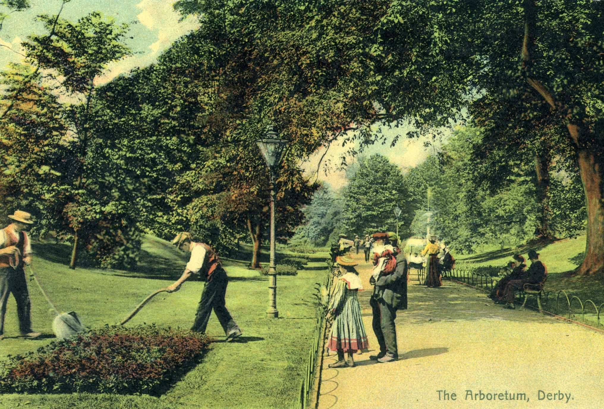

From a Victorian vision to a beloved community green space — over 180 years of history.
Derby Arboretum holds a unique place in the history of public parks. Opened on 16 September 1840, it is widely regarded as the first park in Britain to be given freely for public use. The arboretum was presented to the people of Derby by local industrialist and philanthropist Joseph Strutt, reflecting his belief that access to green space should benefit the health and wellbeing of the community.
Strutt commissioned the influential landscape designer John Claudius Loudon to create the park, one of the final major works of his career. Loudon’s design was innovative, with winding serpentine paths, raised mounds to enhance views, and a diverse collection of specimen trees from Britain and around the world.
The opening was a major civic celebration attended by thousands of Derby residents, with music, processions, and festivities. Derby Arboretum soon became an important model for the development of public parks in Britain and beyond.

Local philanthropist and mill owner Joseph Strutt decides to gift a public park to the people of Derby, commissioning John Claudius Loudon to design it.
Derby Arboretum opens on 16 September 1840 — Britain's first public park. Thousands of residents attend the opening celebrations.
A German air raid on 15/01/1941 decapitated the Florentine Boar.
Ken Russell's Oscar-winning film was shot in the Arboretum.
Interview with some of the cast in the ArboretumFollowing a £5 million project funded by the Heritage Lottery Fund a grand reopening of the Arboretum took place in September. In November a new replica of the Boar was put in place.
Film about the restorationDerby Rotary Club helped establish the Friends of Derby Arboretum and secured funding to restore the derelict Joseph Strutt Pavilion, reopening it as a community hub — completed to coincide with the Derby Arboretum's 180th anniversary.
Film about Derby Rotary Club & the pavilion restorationAwarded to the Friends of Derby Arboretum for transforming a derelict building; providing an activity hub and garden; delivering community events.
We continue to care for, celebrate, and promote this nationally significant green space for future generations.
Official records and background reading on the park's design and listed status.
Wikipedia Derby Arboretum Historic England official-list-entryDiscover the specimen trees Loudon planted, then and now.
Loudon’s original 1840 guide to the trees & shrubs Our film about the trees of the Arboretum. Arboretum tree trail (PDF download)The people who have used and loved the park over the years.
The People of the Park. A film exploring what it means to some of our visitors.